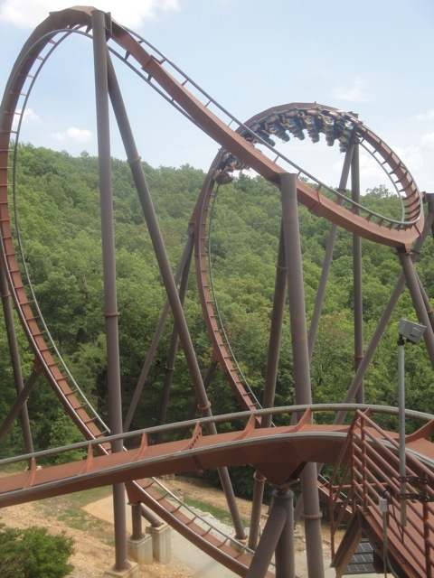
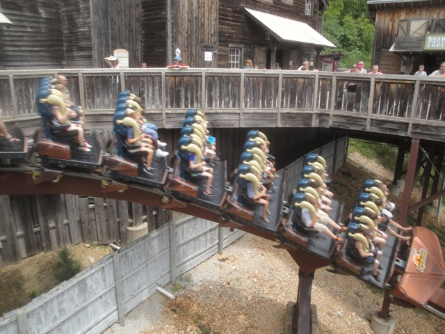
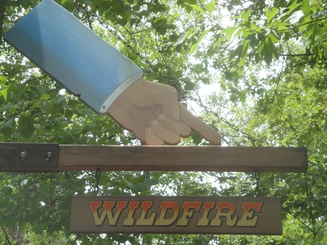
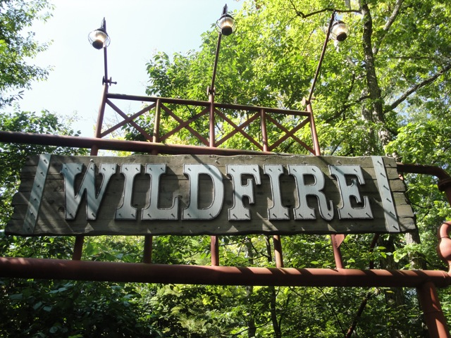

| |
.
Wildfire Review

Today at Silver Dollar City, we'll be reviewing Wildfire for you. After getting in the trains and pulling down the OTSRs, we are off. We start out with a fairly larger than normal B&M dip out of the station. That's cool. We then climb the lifthill. We get a really nice view of the Ozark Mountains, dominating above all the trees. After cresting the lifthill, we turn to the right and roar down the first drop. In the front, this first drop is awesome as it gives us quite a bit of speed and all the wind in your face feels great. And then, in the back, EJECTOR AIR!!!!! REALLY GOOD EJECTOR AIR!!!!!! =) So yeah, Wildfire is off to a great start. We then soar up into an immelmann loop. This is very floaty as we get some nice hangtime at the top and a great view of the Ozarks upsidedown before dropping and unflipping back down to the ground, picking up all the speed we had lost. We then soar up into a vertical, which like our immelmann loop, is also very floaty and fun. We then go through a nice low to the ground turn before rising up into the cobra roll. While it doesn't snap all too much, it's certainly not forceless, ripping through the cobra roll like a hot rod in the Indy 500. We then go through a slight 90 degree banked turn. This is awesome as we get some great laterals that snap us to the side before we roar straight into a giant corkscrew. Now this corkscrew certainly snaps as we just whip through it without a single moment to catch your breath. We then roar into an upward helix. We get pressed into our seats as we roar up the helix and into the brake run. Oh, and while in the helix, watch out. If you suddenly feel a sharp pain in one of your arms during this part of the ride, congratualations. A bee or wasp has stung you on Wildfire. Welcome to the club. =) So yeah. That's Wildfire. And it kicks ass!!!!! The ride really maintains its speed, has great ejector air on the first drop, and the inversions can range from fun and floaty to intense and snappy. Definetly check it out while at Silver Dollar City. It's a fine B&M and a great edition to Silver Dollar City.
8/10
Location: Silver Dollar City
Opened: 2001
Built by: B&M
Last Ridden: July 19, 2013
Wildfire Photos







Home
|